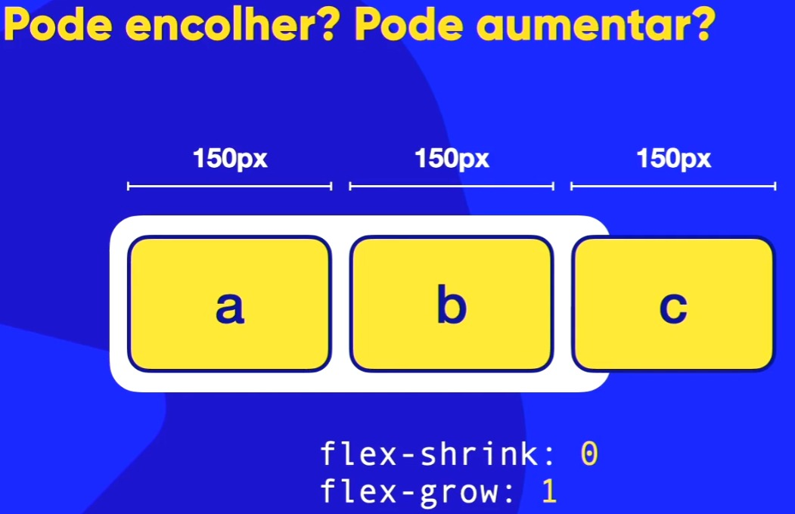
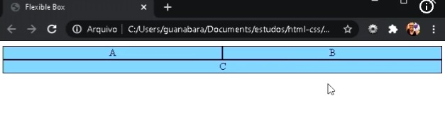
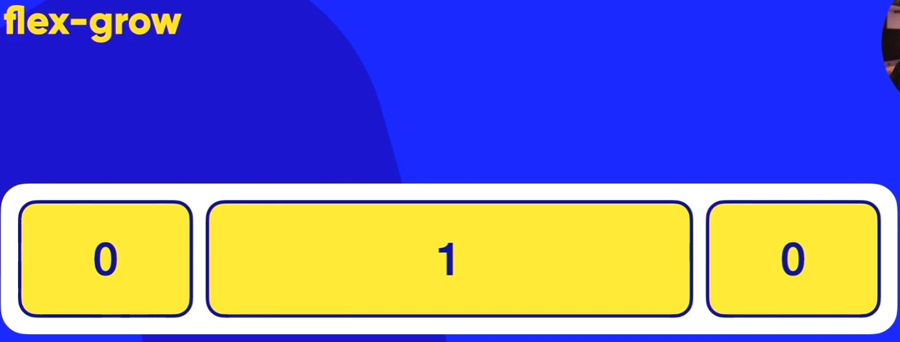
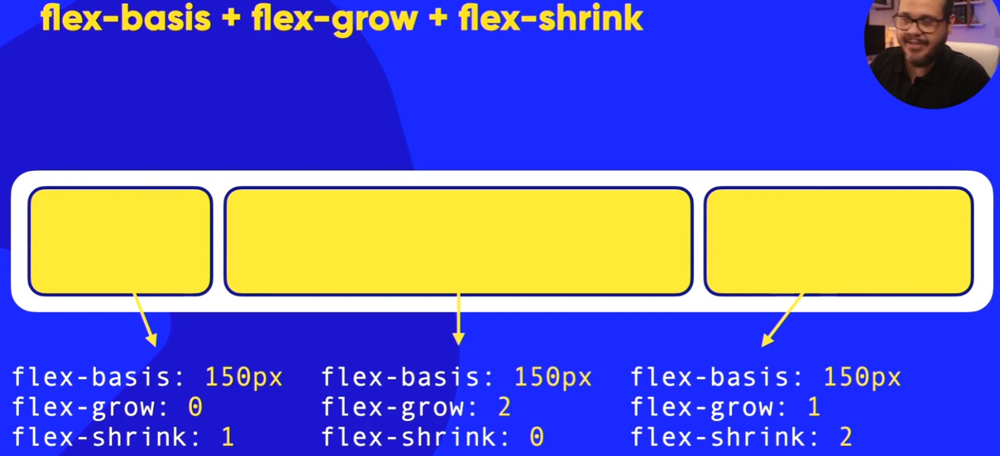
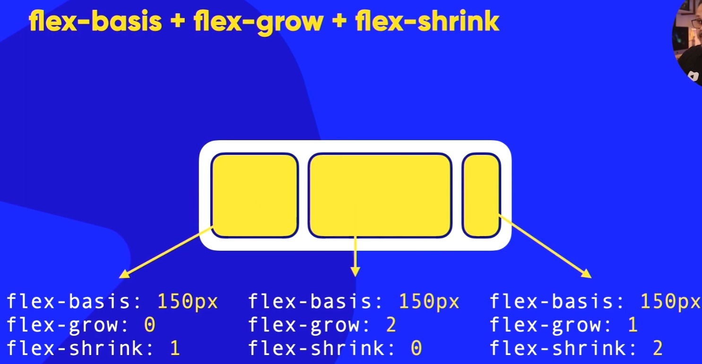
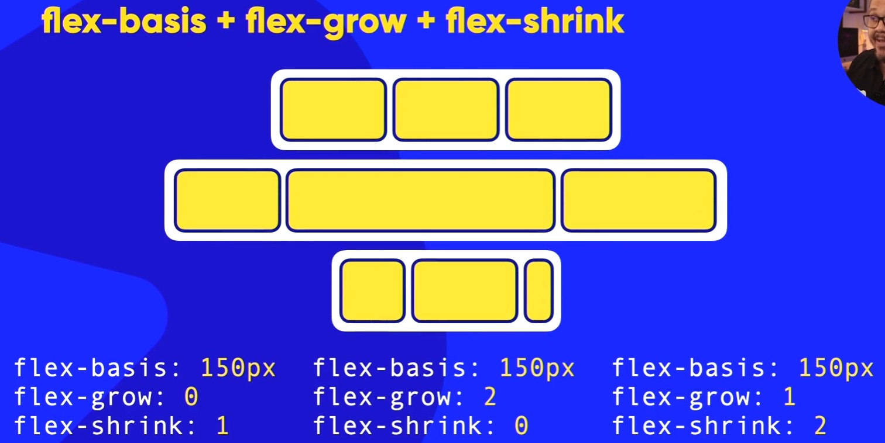

Flex-Grow
Nessa aula iremos aprender a usar os elementos para fazer com que um item possa ou não encolher ou crescer quando o container diminuir ou aumentar.
Lembrando que, para usar as tags grow e shrink, não podemos estar usando o elemento flex-wrap: wrap pois se usarmos, quando o item chegar no limite do container, ele vai quebrar/envelopar
e assim, o grow e o shrink não serão uteis! Ou seja, sempre que formos usar o grow e o shrink, usar o flex-wrap: nowrap!
Por padrão, o flex-grow: 0; e oflex-shrink: 01;. Ou seja, se você nao colocar/alterar nenhum valor, irão vir como padrão esses valores.
Mas o que significa esses valores?
Ao colocarmos o flex-shrink: 01, significa que SIM, o item pode encolher. Ou seja, é como se fosse um false(0) and true (1)
Da mesma forma funciona o flex-grow: 0;. Ao usarmos o valor de true (1) o item vai poder crescer dentro do container e ao usarmos o valor de false (0) ele não vai poder crescer.
Se reparar, o Guanabara já tinha usado esse flex-shrink e o flex-grow nos vídeos anteriores mas a gente estava no começo e ainda não tinha aprendido sobre essa aula atual. Quer saber como?
Lembra que no começo ele usou o seguinte elemento:
#container{
display: flex;
}
.item{
flex: auto;
}
Ou seja, ao usarmos o elemento flex: auto; (no item), iremos ter as tags flex-shrink e flex-grow como true!
No exemplo que estamos usando agora, está com as seguintes configurações:
flex-shrink: 01;
flex-grow: 0;
Ou seja, o item pode encolher e não pode crescer dentro do container.
Eis um exemplo abaixo de um container que aumentou mas os itens ficaram do mesmo tamanho pois está com o valor flex-shrink: 1 e flex-grow: 0;:
Agora, eis o que acontece quando a gente coloca o flex-shrink: 1; e flex-grow: 1; ao aumentarmos a largura do container:
Resumindo: Caso a gente queira que os itens/content fiquem flexíveis/elásticos e aumentem e diminuam até o limite da tela, usar os elementos: flex-shrink: 1; e flex-grow: 1;!
Lembrando que se a gente deixar o flex-shrink: 0; e o flex-grow: 1; e mudar o tamanho do container, o item irá quebrar ficando maior que o tamanho do container caso o flex-basis tiver um tamanho em px maior que o tamanho do container.
Eis o exemplo do que acontece quando a gente deixa o flex-shrink: 0; e flex-grow: 1;:

Tomar cuidado com o tamanho do conteúdo do item/content pois se for uma tela/screen de celular pequena, pode acabar quebrando. Usei um exemplo colocando lorem
nas div de exemplo.
LEMBRANDO QUE: Os exemplos que nós usamos aqui estão configurados no flex-flow: row nowrap mas isso não significa que a gente não possa usar esses elementos no flex-flow: row wrap!!
Se a gente for usar o flex-flow: row wrap - flex-shrink: 1; e flex-grow: 1;, quando o container/tela for diminuir até o tamanho do item, ele vai quebrar/envelopar normalmente ocupando o espaço criado por inteiro!
Veja o exemplo abaixo:

Mais sobre Flex-Grow
Agora, iremos falar sobre os diferentes valores que a gente pode colocar no flex-grow. Ou seja, não são somente os 1 e 0 (não é binário) e nem true or false.
A gente pode fazer a mesma coisa que nós fizemos na aula de order. Se lembra que a gente pode pegar um item e mudar a order/local dele? Então...aqui a gente pode fazer a mesma coisa ao colocarmos um id ou class.
Só que nessa aula, iremos continuar usando o elemento flex-grow usando os valores 0, 1, etc para mudar o comportamento/ampliação do item que estará com um id ou class!
Nesse exemplo que irei mostrar agora, está configurado dessa forma:
#item1{
flex-grow: 0;
}
#item2{
flex-grow: 1;
}
#item3{
flex-grow: 0;
}
Eis o resultado ao aumentarmos o tamanho do container:

Ao colocarmos outros valores, ele vai crescer de acordo com o valor da proporção que colocarmos.
No exemplo que iremos mostrar aqui, pegamos os seguintes valores:
#item1{
flex-grow: 0;
}
#item2{
flex-grow: 1;
}
#item3{
flex-grow: 2;
}
Ao colocarmos esses valores, o primeiro item não irá crescer (pois o valor é 0), o segundo item vai crescer (valor 1) e o terceiro item (valor 2), vai crescer o dobro da proporção do (item 2)! Lembrando que é uma questão de proporção e não somente números ou sobre ficar maior. Ou seja, vai crescer o dobro porque 2 é o dobro de 1!
Veja a imagem abaixo:
Não falei no comentário de cima que não é uma questão de valores (números) e sim de proporção? O exemplo que irei mostrar aqui agora vai mostrar que estamos falando de proporção. No exemplo abaixo, irei colocar os seguintes valores:
#item!{
flex-grow: 0;
}
#item2{
flex-grow: 2;
}
#item3{
flex-grow: 2;
}
Ou seja, o item 3 não vai crescer o dobro do segundo item pois ambos tem o mesmo valor e por isso não se trata de números ("ah, número 2 é sempre dobro e 3 é o triplo") e sim de proporção! No exemplo a seguir, o item 2 e item 3 terão o mesmo tamanho pois a proporção é igual! Ou seja, item 2 e 3 irão crescer da mesma forma proporcional. Eis a imagem: ↓
Continuando com o mesmo exemplo mas usando o flex-shrink
O mesmo é aplicado quando usamos o flex-shrink. Eis alguns exemplos sendo aplicados da mesma forma mas no flex-shrink:
Exemplos misturando os 3 (flex-basis + flex-grow + flex-shrink)
Eis um exemplo de início que iremos aumentar o container:

Eis um exemplo ao diminuirmos o container:

Ou seja, dessa forma, a gente pode criar diversos tipos de comportamentos dependendo do dispositivo que a nossa página estiver! Eis um exemplo de como seria acessando a nossa web page em diferentes dispositivos usando os exemplos citados acima:
